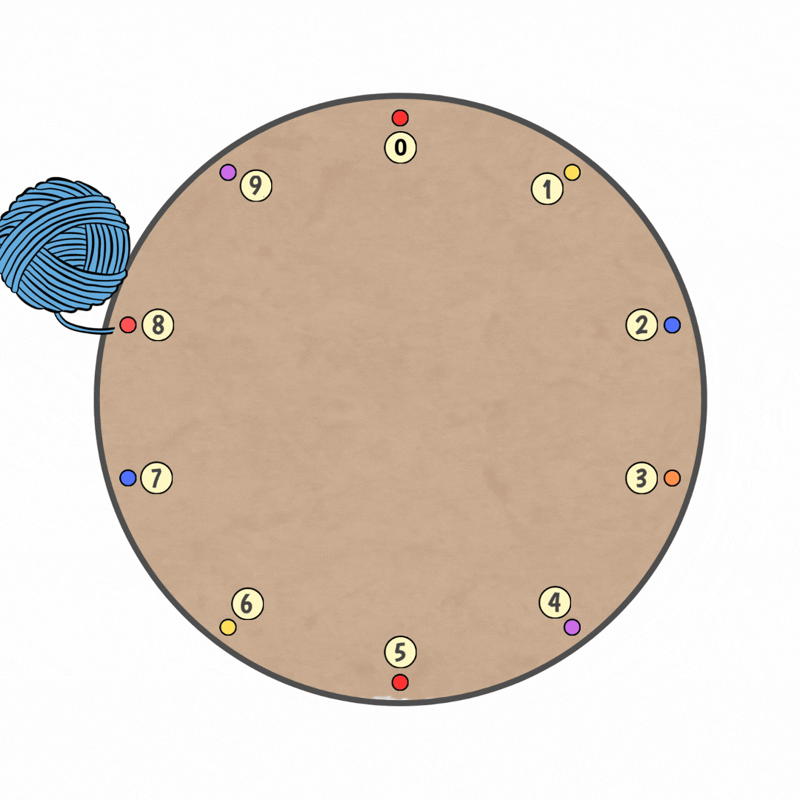

¿CUÁLES SON LOS BENEFICIOS DE LOS CÍRCULOS DE MULTIPLICAR WALDORF?
Los principales beneficios de los circulos de multiplicar son que estimula las habilidades cognitivas del niño y fomenta la creatividad.
MATERIALES PARA CREAR EL CÍRCULO DE MULTIPLICAR
Cartón o Madera
Números o Marcadores
Tachuelas o estacas
Lana o Hilos
PASOS PARA CREAR EL CÍRCULO DE MULTIPLICAR
En el cartón o la madera, trazamos el círculo de mínimo 10 cm de radio y lo recortamos.
Con la ayuda de un lápiz y una regla vamos a trazar líneas que nos ayudaran como guía para ubicar nuestras tachuelas.
Ubicar las tachuelas, empezamos ubicandolas en los polos y despues en los lados del círculo dejando un salto de una línea.
Ubicar los números junto a las tachuelas, desde el 0 al 9 de manera consecutiva.
Finalmente, amarramos la lana o hilo en la tachuela del número 0.
